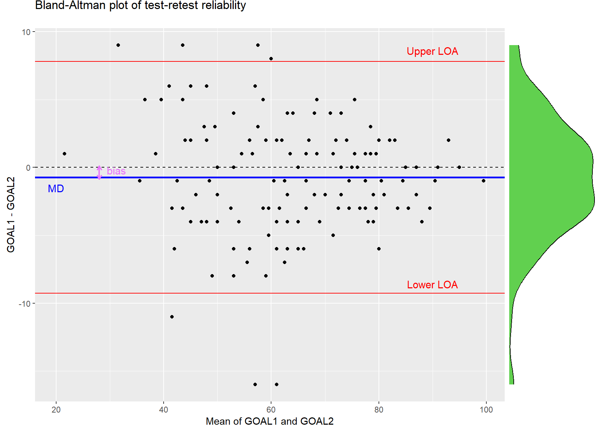

33 Measures of relative and absolute reliability
In this chapter, we explore measures of relative and absolute reliability (or agreement) that are used to assess the consistency, stability, and reproducibility of measurements or judgments.
When we have finished this Chapter, we should be able to:
33.1 Relative and absolute reliability
Two distinct types of reliability are used: the relative and absolute reliability (agreement) (Kottner and Streiner 2011).
Relative Reliability is defined as the ratio of variability between scores of the same subjects (e.g., by different raters or at different times) to the total variability of all scores in the sample. Reliability coefficients, such as the intra-class correlation coefficient for numerical data or Cohen’s kappa for nominal data, are employed as suitable metrics for this purpose.
Absolute Reliability (or Agreement) pertains to the assessment of whether scores, or judgments are identical or comparable, as well as the extent to which they might differ. Typical statistical measures employed to quantify this degree of error are the standard error of measurement (SEM) and the limits of agreement (LOA) for numerical data, or percent in agreement for numerical data.
33.2 Packages we need
We need to load the following packages:
33.3 Reliability for continuous measurements
Introduction
The observed scores (X) from an instrument are thought to be composed of an underlying true score (T) and an error component (E) that is due to measurement error, such that:
\[ X = True + Error \tag{33.1}\]
If the true measurement and the error term are uncorrelated, the measurement variance, \(\sigma^2_X\), is given by:
\[ \sigma^2_X = \sigma^2_{True} + \sigma^2_{Error} \tag{33.2}\]
Research question
The parent version of Gait Outcomes Assessment List questionnaire (GOAL) is a parent-reported outcome assessment of family priorities and functional mobility for ambulatory children with cerebral palsy. We aim to examine the test–retest reliability of the GOAL questionnaire for the total score (score range: 0 - 100).
Test-Retest Reliability
Test-retest reliability is used to assess the consistency and stability of a measurement tool (e.g. self-report survey instrument) over time on the same subjects under the same conditions. Specifically, assessing test-retest reliability involves administering the measurement tool to a group of individuals initially (time 1), subsequently reapplying it to the same group at a later time (time 2), and finally examining the correlation between the two sets of scores obtained.
| ID | Measurement 1 (time 1) | Measurement 2 (time 2) |
|---|---|---|
| 1 | \(x_{11}\) | \(x_{12}\) |
| 2 | \(x_{21}\) | \(x_{22}\) |
| … | … | … |
| n | \(x_{n1}\) | \(x_{n2}\) |
Preraring the data
The GOAL questionnaire was completed twice, 30 days apart, in a prospective cohort study of 127 caregivers of children with cerebral palsy and the data were recorded as follows:
library(readxl)
goal <- read_excel(here("data", "goal.xlsx"))We will begin our investigation into the association between the first (GOAL1) and the second (GOAL2) measurement by generating a scatter plot:
ggplot(goal, aes(GOAL1, GOAL2)) +
geom_point(color = "black", size = 2) +
lims(x = c(0, 100), y = c(0,100)) +
geom_abline(intercept = 0, slope = 1, linewidth = 1.0, color = "blue") +
coord_fixed(ratio = 1)
The scatter plot compares the GOAL1 and GOAL2 total scores. The solid blue diagonal line is the line of equality (i.e. the reference line: Y = X) that represents a perfect agreement of the two measurements.
Intra-class correlation coefficient (ICC)
Test-retest data of continuous measurements is often assessed using the intra-class correlation coefficient \(ρ_{ICC}\). The \(ρ_{ICC}\) is a ratio generally defined as:
\[ ρ_{ICC} =\frac{\sigma^2_{True}}{\sigma^2_{X}} \tag{33.3}\]
The \(ρ_{ICC}\) correlation coefficient ranges from 0 to 1 where higher values indicate better test-retest reliability. The Table 33.1 provides a categorization of ICC index, yet the understanding of ICC values can be somewhat arbitrary.
| ICC value | Interpretation |
|---|---|
| <0.5 | Poor agreement |
| 0.5 to <0.75 | Moderate agreement |
| 0.75 to <0.9 | Good agreement |
| 0.9 to 1.0 | Very Good agreement |
The population intra-class coefficient \(ρ_{ICC}\) can be estimated using the ICC index. There are three different types of ICC representing different mathematical models:
- one-way random effects model ICC(1)
- two-way random effects model ICC(A,1)
- two-way mixed-effects model ICC(C,1)
where A stands for “Agreement” and C stands for “Consistency”.
The choice of the appropriate ICC model depends on several factors, including how the data were collected, which variance components are considered relevant, and the specific type of reliability (agreement or consistency) we intend to assess (Liljequist, Elfving, and Skavberg Roaldsen 2019).
In the context of our example, it is recommended to use the “two-way” model rather than the “one-way” model and “agreement” rather than “consistency”, as systematic differences in the individual scores on the GOAL instrument over time are of interest (Qin et al. 2018).
For this model the Equation 33.1 becomes:
\[ X = μ + ID + M + Residual \]
where \(μ\) is a constant (the mean value of X for the whole population), ID term is the difference due to subjects, M the difference due to measurements (in our case different time points), and the Residual is the random error.
Note that based on the Equation 33.1 the “true score” is μ + ID and the measurement error is M + Residual.
The variance \(\sigma^2_X\) for this model is:
\[ \sigma^2_X=\sigma^2_{ID} +\sigma^2_{M} +\sigma^2_{Residual} \]
In population, the intra-class coefficient, \(ρ_{A, 1}\), is defined as:
\[ ρ_{A, 1} = \frac{\sigma^2_{ID}}{\sigma^2_{ID} +\sigma^2_{M} +\sigma^2_{Residual}} \tag{33.4}\]
where \(\sigma^2_{ID}\), \(\sigma^2_{M}\), and \(\sigma^2_{Residual}\) are the variances of subjects (ID), measurements and error (residuals), respectively.
A statistical estimate of the \(ρ_{A, 1}\) for agreement is given by the ICC(A,1) formula (Koo and Li 2016; Qin et al. 2018; Liljequist, Elfving, and Skavberg Roaldsen 2019):
\[ ICC(A, 1) = \frac{MSB-MSE}{MSB + (k-1) MSE + \frac{k}{n}(MSM-MSE)} \tag{33.5}\]
where \(MSB\) = Mean Square Between subjects; MSE = Mean Square Error; \(MSM\) = Mean Square (Between) Measurements; n = number of subjects; k = number of measurements.
In R:
First, we convert data from a wide format to a long format using the pivot_longer() function:
# convert data into long format
goal_long <- goal |>
mutate(ID = row_number()) |>
pivot_longer(cols = c("GOAL1", "GOAL2"),
names_to = "M", values_to = "score") |>
mutate(ID = as.factor(ID),
M = factor(M))
head(goal_long)# A tibble: 6 × 3
ID M score
<fct> <fct> <dbl>
1 1 GOAL1 22
2 1 GOAL2 21
3 2 GOAL1 36
4 2 GOAL2 27
5 3 GOAL1 35
6 3 GOAL2 36Then, a two-way analysis of variance is applied with factors the id and the items:
Df Sum Sq Mean Sq F value Pr(>F)
ID 126 58691 465.8 49.219 <2e-16 ***
M 1 34 34.1 3.598 0.0601 .
Residuals 126 1192 9.5
---
Signif. codes: 0 '***' 0.001 '**' 0.01 '*' 0.05 '.' 0.1 ' ' 1The statistical results are arranged within a matrix and we extract the mean squares of interest:
[,1] [,2] [,3] [,4] [,5]
[1,] 126 58691.37795 465.80459 49.219201 6.192816e-72
[2,] 1 34.05118 34.05118 3.598015 6.013766e-02
[3,] 126 1192.44882 9.46388 NA NAMSB <- stats[1,3]
MSM <- stats[2,3]
MSE <- stats[3,3]Finally, we calculate the ICC(A, 1) for agreement based on the Equation 33.5:
n <- dim(goal)[1]
k <- dim(goal)[2]
iccA1 <- (MSB - MSE)/(MSB + (k - 1) * MSE + k/n * (MSM - MSE))
iccA1[1] 0.959393Next, we present R functions to carry out all the tasks for an reliability analysis.
icc(goal, model = "twoway", type = "agreement") Single Score Intraclass Correlation
Model: twoway
Type : agreement
Subjects = 127
Raters = 2
ICC(A,1) = 0.959
F-Test, H0: r0 = 0 ; H1: r0 > 0
F(126,121) = 49.2 , p = 1.48e-69
95%-Confidence Interval for ICC Population Values:
0.943 < ICC < 0.9711/1
RELIABILITY ANALYSIS
Coefficient of Variation (%): 4.83
Standard Error of Measurement (SEM): 3.0763
Standard Error of the Estimate (SEE): 4.2643
Standard Error of Prediction (SEP): 6.0928
Intraclass Correlation Coefficients
────────────────────────────────────────────────────────────────────────────────────────
Model Measures Type ICC Lower C.I. Upper C.I.
────────────────────────────────────────────────────────────────────────────────────────
one-way random Agreement ICC1 0.9593765 0.9458943 0.9695576
two-way random Agreement ICC2 0.9593930 0.9457079 0.9696539
two-way fixed Consistency ICC3 0.9601747 0.9469150 0.9701731
one-way random Avg. Agreement ICC1k 0.9792671 0.9721950 0.9845435
two-way random Avg. Agreement ICC2k 0.9792757 0.9720965 0.9845932
two-way fixed Avg. Consistency ICC3k 0.9796828 0.9727338 0.9848608
────────────────────────────────────────────────────────────────────────────────────────
Variance Components
───────────────────────────────────────────
Component Variance Percent
───────────────────────────────────────────
ID 228.1706416 0.95939304
Items 0.1936130 8.140880e-4
Residual 9.4638647 0.03979288
Total 237.8281193 1.00000000
─────────────────────────────────────────── 
The intra-class correlation coefficient for the total score was ICC(A,1) = 0.96 (95% CI = 0.94–0.97).
Standard Error of Measurement (SEM)
The measurement error (SEM) is computed using the Equation 33.2 and Equation 33.3 as follows:
\[ \sigma^2_{Error} = \sigma^2_X - \sigma^2_{True} \]
we multiply and dived by \(\sigma^2_X\):
\[ \begin{aligned} \sigma^2_{Error} &= \sigma^2_X \cdot \frac{(\sigma^2_X - \sigma^2_{True})}{\sigma^2_X} \\ &= \sigma^2_X \cdot (1 - \frac{\sigma^2_{True}}{\sigma^2_X}) \\ &= \sigma^2_X \cdot (1 - \rho_{ICC}) \end{aligned} \tag{33.6}\]
The measurement error is represented by the standard error of measurement (SEM) and equals the square root of the error variance. Therefore, the SEM is obtained by calculating the square root of both sides of the equation Equation 33.6:
\[ SEM = \sigma_X \cdot \sqrt{1-\rho_{ICC}} \tag{33.7}\]
Minimum Detectable Change (MDC)
The minimum detectable change (MDC) is based on the measurement error and is defined as (Goldberg and Schepens 2011):
\[ MDC = \sqrt{2} \cdot z_{a/2} \cdot SEM \tag{33.9}\]
where \(\sqrt{2}\) is a multiplier to account for extra uncertainty when repeated measurements are conducted, and \(z_{a/2}\) the z-score associated with the 95% confidence level.
# calculate the z-value for a/2 = 0.05/2 = 0.025
z <- qnorm(0.025, mean = 0, sd = 1, lower.tail = FALSE)
# calculate the minimum detectable change
mdc <- sqrt(2) * z * sem
mdc[1] 8.705942Both random and systematic errors are taken into account in the MDC. A change in scores smaller than the MDC can be due to measurement error and may not be a real change.
Limits of Agreement (LOA) and Bland-Altman Plot
- Limits of Agreement (LOA)
If the differences between the two scores (GOAL1 - GOAL2) follow a normal distribution, we expect that approximately 95% of the differences will fall within the following range (see Chapter 16):
\[ 95\%\ LOA = \overline{dif} \pm 1.96 \cdot SD_{dif} \tag{33.10}\]
where \(\overline{dif}\) is the mean of the differences (bias), and \(SD_{dif}\) is the standard deviation of the differences that measure random fluctuations around this mean.
#calculate the differences of scores
dif <- goal$GOAL1 - goal$GOAL2
# compute lower limit of 95% LOA
lower_LOA <- mean(dif) - z * sd(dif)
lower_LOA[1] -9.259311[1] 7.794745From our example, the mean of the differences (bias) is -0.73 (i.e. the scores at retest are on average 0.73 units higher than the scores at first test), which is a small difference. Additionally, the limits of agreement indicate that 95% of the differences lie in the range of −9 units to 8 units.
- The Bland-Altman method
The Bland-Altman method uses a scatter plot to quantify the measurement bias and a range of agreement by constructing 95% limits of agreement (LOA). The basic assumption of Bland-Altman is that the differences are normally distributed .
#calculate the mean of GOAL1 and GOAL2
mean_goal12 <- (goal$GOAL1 + goal$GOAL2)/2
# create a data frame with the means and the differences
dat_BA <- data.frame(mean_goal12, dif)
# Bland-Altman plot
BA_plot <- ggplot(dat_BA, aes(x = mean_goal12, y = dif)) +
geom_point() +
geom_hline(yintercept = 0, color = "black", linewidth = 0.5, linetype = "dashed") +
geom_hline(yintercept = mean(dif), color = "blue", linewidth = 1.0) +
geom_hline(yintercept = lower_LOA, color = "red", linewidth = 0.5) +
geom_hline(yintercept = upper_LOA, color = "red", linewidth = 0.5) +
labs(title = "Bland-Altman plot of test-retest reliability",
x = "Mean of GOAL1 and GOAL2",
y = "GOAL1 - GOAL2") +
annotate("text", x = 90, y = 8.6, label = "Upper LOA", color = "red", size = 4.0) +
annotate("text", x = 90, y = -8.6, label = "Lower LOA", color = "red", size = 4.0) +
annotate("text", x = 20, y = -1.5, label = "MD", color = "blue", size = 4.0) +
annotate("text", x = 31.2, y = -0.2, label = "bias", color = "#EA74FC", size = 4) +
geom_segment(x = 28, y = 0.1, xend = 28, yend = -0.85, linewidth = 0.8, colour = "#EA74FC",
arrow = arrow(length = unit(0.07, "inches"), ends = "both"))
ggMarginal(BA_plot, type = "density", margins = 'y',
yparams = list(fill = "#61D04F"))
For each pair of measurements, the difference between the two measurements is plotted on the Y axis, and the mean of the two measurements on the X axis. We can check the distribution of the differences by examining the marginal green histogram on the right-hand side of the graph. In our example, the normality assumption is met; however, if the histogram is skewed or has very long tails, the assumption of Normality might not hold.
The mean of the differences (MD), represented by the solid blue line, is an estimate of the systematic bias between the two measurements (Figure 33.3). In our case, the magnitude bias (purple arrow) has a small value (-0.73 units). The lower and upper red horizontal lines represent the upper and lower 95% limits of agreement (LOA), respectively. Under the normality assumption of the differences (green histogram), nearly 95% of the data points are likely to be within the LOAs. In our example, most of the the points are randomly scattered around the zero dashed line within the limits of agreement (−9 to 8 units), and as expected 7 out of 127 (5.5%) data points fall out of these limits.
If we want to add confidence intervals for the MD and for the lower and upper limits of agreement (Lower LOA, Upper LOA) in Figure 33.3, we can use the bland.altman.stats() function from the {BlandAltmanLeh} package which provides these intervals:
# get the confidence intervals for the MD, Low and Upper LOA
ci_lines <- bland.altman.stats(goal$GOAL1, goal$GOAL2)$CI.lines
ci_lineslower.limit.ci.lower lower.limit.ci.upper mean.diff.ci.lower
-10.58273587 -7.93620048 -1.49627242
mean.diff.ci.upper upper.limit.ci.lower upper.limit.ci.upper
0.03170549 6.47163356 9.11816894 # define the color of the lines of the confidence intervals
ci_colors <- c("red", "red", "blue", "blue", "red", "red")
# Bland-Altman plot
BA_plot2 <- BA_plot +
geom_hline(yintercept = ci_lines, color = ci_colors, linewidth = 0.5, linetype = "dashed")
ggMarginal(BA_plot2, type = "density", margins = 'y',
yparams = list(fill = "#61D04F"))
If the data points in the Bland-Altman plot are close to the zero dashed line, it indicates that there is a good level of agreement between the two measurements.
There are lots of packages on CRAN that include functions for creating Bland-Altman plots:
blandr.draw(goal$GOAL1, goal$GOAL2)
bland.altman.plot(goal$GOAL1, goal$GOAL2, graph.sys = "ggplot2", conf.int=0.95)